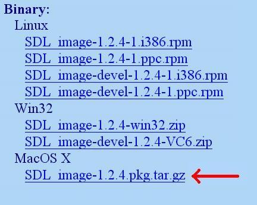
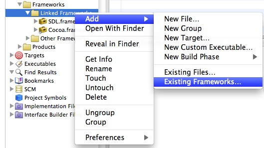
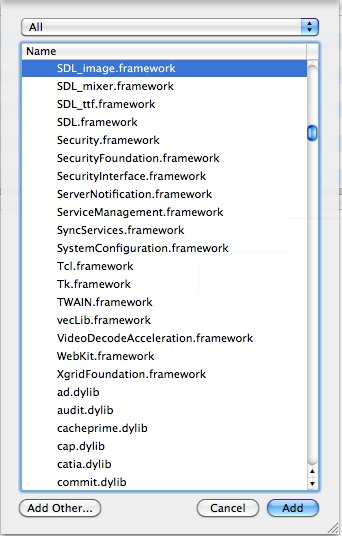

In this tutorial you're going to learn to set up SDL_image. If you know how to set up this extension, you can set any of them up.
SDL_image is located on this page.
SDL_image is located on this page.
1)Scroll down to the Binary section and download the Mac OS X package:
2)Copy the SDL_image.framework folder from the runtime library package to /Library/Frameworks.
If you were setting up SDL_ttf you'd copy
3)Open up your SDL project. In the groups and files menu open the frameworks folder and right click (or shift click) on linked frameworks. Then go to add, existing frameworks.
4)Select SDL_image, then click on SDL_image.framework. Then click add.
If you were linking SDL_ttf you'd append
4)To use SDL_image make sure to include the header file.

2)Copy the SDL_image.framework folder from the runtime library package to /Library/Frameworks.
If you were setting up SDL_ttf you'd copy
SDL_ttf.framework
SDL_mixer.framework
3)Open up your SDL project. In the groups and files menu open the frameworks folder and right click (or shift click) on linked frameworks. Then go to add, existing frameworks.

4)Select SDL_image, then click on SDL_image.framework. Then click add.

If you were linking SDL_ttf you'd append
SDL_ttf.framework
SDL_mixer.framework
4)To use SDL_image make sure to include the header file.
#include "SDL_image/SDL_image.h"
If you were setting up SDL_ttf you'd put
Now the extension library is all set up.
#include "SDL_ttf/SDL_ttf.h"
#include "SDL_mixer/SDL_mixer.h"
Now the extension library is all set up.
Now you can use SDL_image functions.
The main one you want to know about is IMG_Load().
The main one you want to know about is IMG_Load().
SDL_Surface *load_image( std::string filename )
{
//加载的图像
SDL_Surface* loadedImage = NULL;
//优化后的图像
SDL_Surface* optimizedImage = NULL;
//使用SDL_image加载图像
loadedImage = IMG_Load( filename.c_str() );
//如果图像加载成功
if( loadedImage != NULL )
{
//创建一个优化后的图像
optimizedImage = SDL_DisplayFormat( loadedImage );
//释放原先加载的图像
SDL_FreeSurface( loadedImage );
}
//返回优化后的图像
return optimizedImage;
}
Here is a revised version of the image loading function from the previous tutorial. As you can see IMG_Load() functions exactly the same as SDL_LoadBMP(), but there's one big exception: IMG_Load() can load BMP, PNM, XPM, LBM, PCX, GIF, JPEG, TGA and PNG files.
From this tutorial on, PNG image files will be the primary image format used. PNGs have excellent lossless compression.
In the tutorials ahead, the example source codes include the SDL extensions differently.
From this tutorial on, PNG image files will be the primary image format used. PNGs have excellent lossless compression.
In the tutorials ahead, the example source codes include the SDL extensions differently.
#include "SDL/SDL_image.h"
#include "SDL/SDL_ttf.h"
#include "SDL/SDL_mixer.h"
This is how both Linux and Windows do it. Since this is how most platforms do it, it's how my example programs do it. To get the example programs to work with Mac OS X, simply remember to change how the SDL extension headers are included.